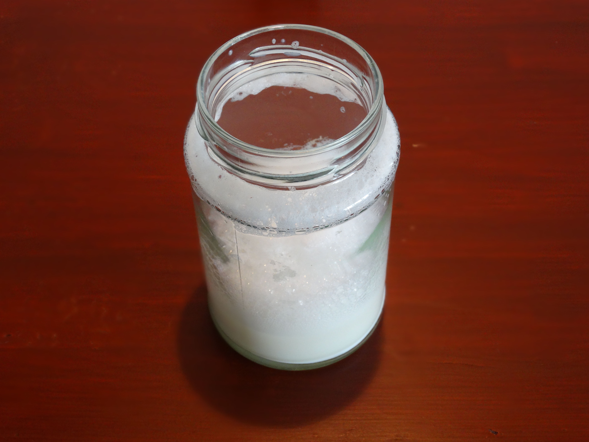

Café kaffe på SU
Kender du det, når at du sidder derhjemme og har lyst til en kop lækker kaffe fra en café, men det er måske sidst på måneden eller der bare lige er lidt for langt hen til den nærmeste café? Her er tre super nemme og billige opskrifter som måske kan tilfredsstille din café-kaffe træng og spare dig lidt penge.
Den perfekte stempelkaffe
Stempelkaffe lyder som noget der er dyrt, fancy og svært at lave, men ærlig talt så kræver det ikke meget at lave en lækker stempelkaffe som smager super dejligt og er mere lækkert end den kedelige instant-kaffe. Denne opskrift kræver dog at man har en stempelkande, de kan dog købes for rimelige penge og holder jo længe.
Ingredienser
- Stempelkande
- 1/2 L Vand
- Formalet kaffe eller kaffebønner og en kaffekværn
Fremgangsmåde til 4 kopper
- Kog vandet
- Kværn 28 g kaffebønner og kom det i stempelkanden.
Hvis ikke du ejer en kaffekværn, så brug i stedet 28 g formalet kaffe - Hæld vandet over kaffebønnerne
- Sæt stopuret til 3:30 min
- Sæt stemplet/filteret på og pres roligt ned til du når bunden
- Kaffen er nu færdig. Hæld den gerne på en termokande,
for ellers bliver den ved med at brygge


Den skummende cappuccino
Hvis ikke du er til sort kaffe, eller er træt af den typiske mælk og kaffe blanding kan du gøre den lidt mere spændende ved at putte lidt skum på toppen. Dette kræver ikke nødvendigvis en fin og fancy mælkeskummer, blot et glas med låg og en mikroovn.
Ingredienser
- Kaffe
- 1 dl mælk
- Glas med skruelåg
- Mikroovn
Fremgangsmåde
- Lav en kop kaffe (følg evt. opskriften på stempelkaffe)
- Hæld 1 dl mælk i glasset og skru låget på
- Ryst glasset til mælken er skummer og fjern låget
- Sæt glasset i mikroovnen, tænd på høj varme og sluk ovnen igen når skummet har rejst sig
- Hæld oven i kaffen og drys evt. en smule kanel eller kakao over skummen 


Den iskolde iskaffe
Denne lækre iskaffe kræver en smule mere end de to andre kaffer, men den er det værd, og er stadig et nemt, billigt og et super lækkert alternativ til caféernes iskaffe.
Ingredienser
- 1/2 L stærk kaffe
- 200 ml mælk
- Muskatnød
- 4 skefulde vaniljeis
Fremgangsmåde
- Frys en del af kaffen ned som isterninger
- Bland resten af kaffen sammen med mælk og muskatnød
- Hæld kaffe-blandingen over isterningerne og tilføj vaniljeisen
- Top eventuelt kaffen af med lidt kakao